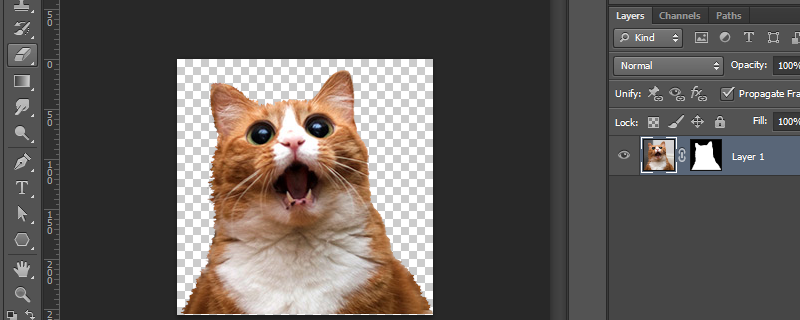
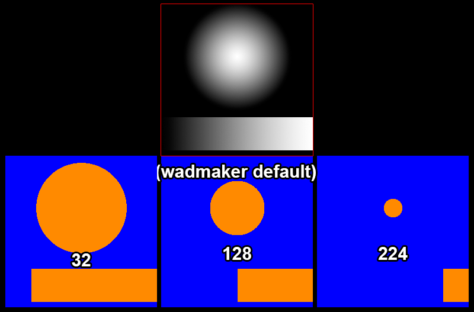
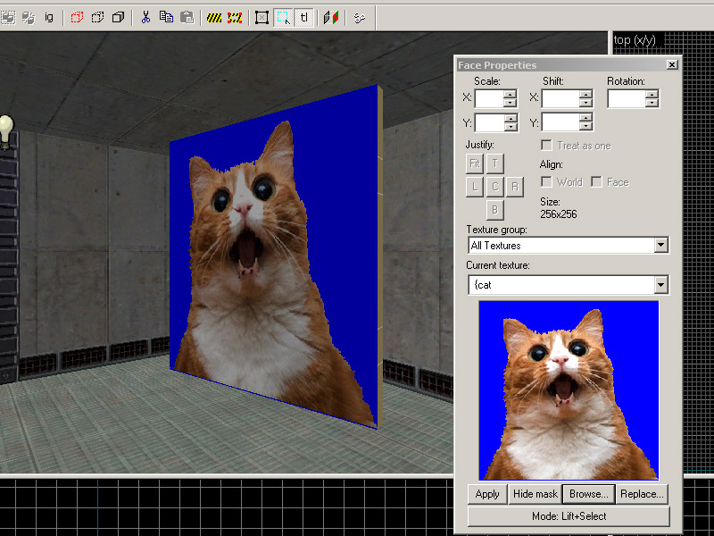
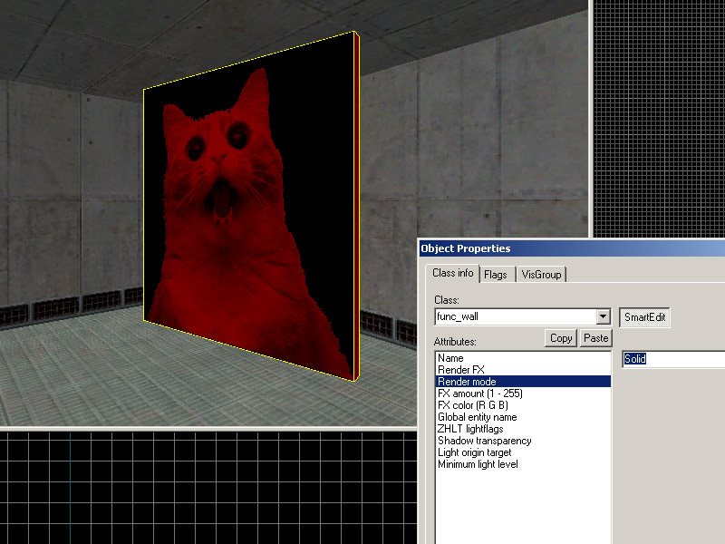
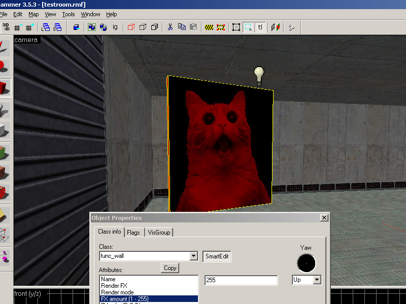
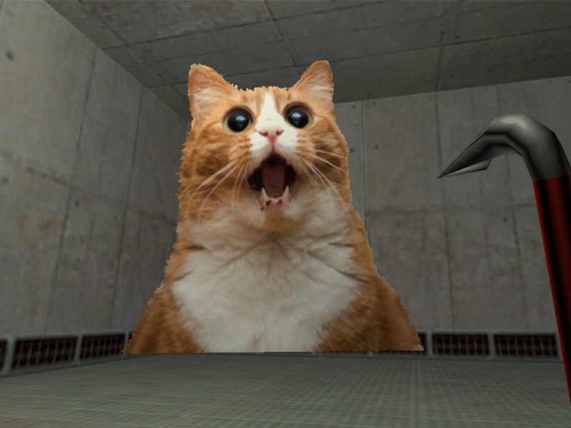

GoldSrc Map Texture Tutorial
PART 2: Masked Transparent textures
GoldSrc Transparency is known as "masked" which is also known as "Alphatest" which means that the transparency is either 1 or 0, essentially a hard edge with no soft transparency. Transparent masked textures work by using the final color of the 8bit indexed pallete as the transparent color.
(For the depricated legacy manual indexing & thesholding guide for photoshop & irfanview, Click Here.)
If using HL-Tools; it will auto-detect, convert PNG transparency and append the "{" symbol for you. Its the same process in Part1. If it doesn't work try to save out your transparent PNG as 8bit.
With Wadmaker, all this conversion is done automatically by turning any existing transparent image, document with layers & layer masks into thresholded transparency to GoldSrc specs. Images that can be made into transparent textures:
TGA with alpha channel
PNG with transparency
GIF with transparency
PSD document with Alpha channel or layer transparency or layer masks
KRA document with Alpha channel or layer transparency or layer masks
1) Create your texture with transparency in any way you want (via lasso select, pen bezier curve select, ect) , while keeping in mind to know the edges will be sharp/hard. You can have soft edges/semi-transparent/grey-alpha but know they will be thresholded, and I will show below how that happens. Save the image in any of the above mentioned; in my example I am going with a PSD document with a layer mask.
 <
2)Save the image and put a "{" symbol at the front of the filename (this tells wadmaker & the engine to recognize it as a transparent texture). Wadmaker by default uses a threshold value of "128" which is a midpoint level in choosing how to define a mask from varying levels of transparency. As a rule of thumb, a smaller value will be a larger amount and a larger value will be a smaller amount shown (minimum is 0 and maximum is 255). I have a visual here to make sense of this concept. The example soft mask is above and the blue area is the transparent area and the orange is the visible area:

Changing this value is done in either the local folder wadmaker.config or global one in the install folder. Its done by adding this line, so for example if you want the value of 32 you place this in that config file:
* transparency-threshold: 32
As mentioned before a "*" means all textures, but if you want different thresholds on different textures you can do that for example like this:
sign1 transparency-threshold: 100
graffiti03 transparency-threshold: 192
dirtspot transparency-threshold: 20
Again, full documentation is in the install folder called "wadmaker readme.html"
3) When ready, simply drag and drop the folder onto wadmaker.exe as before and place the wadfile.

4) Open up hammer and create a func_wall entity with "null" tool texture (as part of zhlt), then texture one side with your custom texture.

5) Set the render mode to "Solid" and then the "FX Amount" to "255". Compile and observe.



6) If you want something you can shoot through (such as a chain-link fence) create the brush entity as "func_illusionary"" instead of "func_wall"